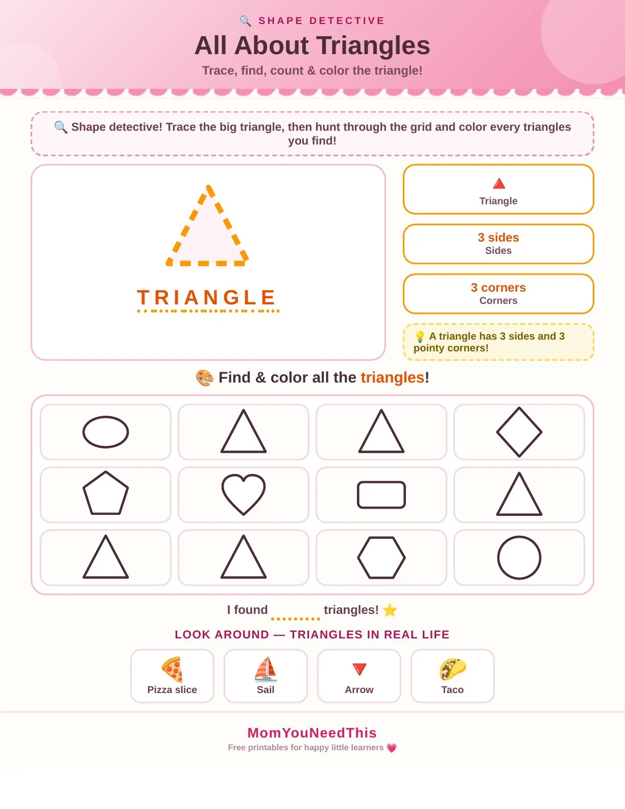

Triangle Activities For Kids Trace, Color & Learn All About Triangles
Help your child explore triangles with printable activities that build shape recognition, counting sides and corners, and early math skills.
Quick Answer
This free printable triangle activity helps toddlers and preschoolers learn the first shape most children master: 3 sides, 3 corners, and a point at the top. The worksheet includes tracing, coloring, and identification exercises sized for little hands. Triangles are also the strongest shape in building — a triangle cannot be squashed flat the way a square frame can — which is why rooftops, bridges and crane arms are full of them. Download and print at home with no signup needed.
At a Glance
- Ages: Toddlers and preschoolers
- Activity: Learning the triangle — 3 sides, 3 corners
- Skills: Shape recognition: triangle
- Format: Printable worksheet (PDF)
- Cost: Free, no signup
🔺 Learn About a Triangle
A triangle is defined by counting: 3 straight sides joined at 3 corners. That counting is the activity — every exercise on this page comes back to “count the sides, count the corners.” A shape with 3 of each is a triangle no matter its size or tilt, and a shape with 4 of either is not, which gives your child a test they can run themselves on anything they find.
Start with the tracing while the counting is fresh: the pencil climbs to the point, slides down, and runs across the bottom — three strokes for three sides. Then color, then hunt. Triangles hide in plain sight (pizza slices, rooftops, road signs, sailboats), so the home hunt at the bottom of this page usually runs longer than the worksheet itself.

🖨️ Download Your Free Triangle Printable
Trace the triangle, color it in, and hunt for triangles around your home. Print it out, grab the crayons, and you're ready — no signup needed.
⬇️ Download Free Printable 🖨️ Print(opens in new tab)🎁 Free printable for toddlers & preschoolers
🔍 Triangle Hunt Around Your Home
Turn learning into a game! Walk around your home together and spot things shaped like a triangle — pizza slices, rooftops, road signs, and sailboats. Add the counting rule to the hunt: before a find counts, your child has to touch all 3 corners. A coat hanger, a folded napkin, the corner of a sandwich cut diagonally — once kids start counting corners, triangles turn up everywhere.
Take the hunt outside, too: yield signs, tent flaps, bicycle frames, and the triangular supports under bridges and swings. Ask why builders love this shape — then demonstrate it: press the sides of a cardboard square and it flops into a diamond; press a triangle and it holds. That one experiment explains half the rooftops in your neighborhood.
💡 Why Learn About the Triangle?
The triangle is where geometry starts, for two reasons. It is the simplest possible straight-sided shape — you cannot close a shape with fewer than 3 sides — and it is the only shape that is rigid all by itself, which makes it the building block inside bridges, roofs, towers and trusses. A child who knows triangles deeply has the foundation every other polygon builds on.
Learning it also installs the method for all the shapes that follow: count sides, count corners, compare. Squares, pentagons and hexagons are all learned the same way, so the time spent counting to 3 on this page is really time spent learning how to interrogate any shape. Add the visual discrimination of picking triangles out of mixed-shape pages, and this one worksheet covers recognition, counting, and early engineering intuition.
📚 Keep Exploring Shapes
Discover more free 2D shape activities, printables, and learning ideas created for busy parents.
🎁 Back to 2D Shape Activities